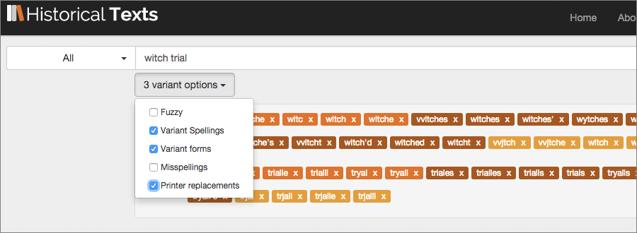

<div class="row">
    <div class="col-xs-12 topSpace">
        <div class="sideMenu">
            <div class="title">Support</div>
            <ul>
                <li class="selected"><a href="">Support home</a></li>
                <li><a href="/help/">Help file</a></li>
                <li><a href="/librarians/">Librarians</a></li>
                <li><a href="/faq/">FAQ</a></li>
            </ul>
        </div>

        <div class="support">

            <ol class="breadcrumb">
                <li class="active">Support Home</li>

            </ol>

           <h1>Shakespeare</h1>
           
           
           <p class="lead">April 2016 marks the 400th anniversary of the poet and playwright William Shakespeare&#39;s death. Shakespeare is extremely well represented in Historical Texts. The plays, poems and sonnets are all included, as are commentaries, discussions, histories and more. We provide direct links to selected texts and search results as well as tips on how to explore the resource further.</p>
		

<h2>Shakespeare&#39;s Plays</h2>
<p>William Shakespeare is of course most famous for his plays. Here are some selections from the Historical Texts service, including early prints. We&#39;ve selected some that are perhaps a little less overexposed. The publication dates are for these editions, not when the plays were written.</p>
       
<div class=row> <div class="col-sm-6 col-md-3"> <div class=thumbnail>  <div class=caption> <h3>Cymbeline: a tragedy.</h3>
<p>Published&#58; 1735</p> <p><span class="badge">ECCO</span></p><p><a href=https://historicaltexts.jisc.ac.uk/ecco-0861100800 class="btn btn-primary" role=button>View text</a> </p> </div> </div> </div> 

<div class=row> <div class="col-sm-6 col-md-3"> <div class=thumbnail>  <div class=caption> <h3>Venus and Adonis</h3></p>
<p>Published&#58; 1636</p> <p><span class="badge">EEBO</span></p><p><a href=https://historicaltexts.jisc.ac.uk/eebo-99840282e class="btn btn-primary" role=button>View text</a> </p> </div> </div> </div> 

<div class=row> <div class="col-sm-6 col-md-3"> <div class=thumbnail>  <div class=caption> <h3>The Tempest</h3> <p>Published&#58; 1734</p> <p><span class="badge">ECCO</span></p><p><a href=https://historicaltexts.jisc.ac.uk/ecco-0695501200 class="btn btn-primary" role=button>View text</a> </p> </div> </div> </div>
  

</div></div></div>

 <div class=row> <div class="col-sm-6 col-md-3"> <div class=thumbnail>  <div class=caption> <h3>The Rape of Lucrece</h3><p>Published&#58; 1655</p> <p><span class="badge">EEBO</span></p><p><a href=https://historicaltexts.jisc.ac.uk/eebo-ocm12388913e class="btn btn-primary" role=button>View text</a></p> </div> </div> </div> 

<div class=row> <div class="col-sm-6 col-md-3"> <div class=thumbnail>  <div class=caption> <h3>Measure for Measure</h3><p>Published&#58; 1784 <p><span class="badge">ECCO</p><p><a href=https://historicaltexts.jisc.ac.uk/ecco-1172100200 class="btn btn-primary" role=button>View text</a></p> </div> </div> </div> 

<div class=row> <div class="col-sm-6 col-md-3"> <div class=thumbnail>  <div class=caption> <h3>Titus Andronicus</h3> <p>Published: 1611 <p><span class="badge">EEBO</span></p><p><a href=https://historicaltexts.jisc.ac.uk/eebo-99846601e class="btn btn-primary" role=button>View text</a> </p> </div> </div> </div> 

           </div></div></div>

<h2>Commentaries and Discussions</h2>
<p>Shakespeare has been a source of endless debate, criticism and conjecture for centuries. 
We could easily have made this whole feature just about commentaries! See what scholars from past eras made of the Bard and his work...
</p>

 <div class=row> <div class="col-sm-6 col-md-3"> <div class=thumbnail>  <div class=caption> <h3>An attempt to ascertain the order in which the plays attributed to Shakespeare were written.</h3> <p>Author&#58; Edward Malone</p><p>Published&#58; 1785</p> <p><span class="badge">BL</span></p><p><a href=https://data.historicaltexts.jisc.ac.uk/view?pubId=bl-002357637&index=bl&pageId=bl-002357637-560163-10 class="btn btn-primary" role=button>View text</a></p> </div> </div> </div> 
 
 <div class=row> <div class="col-sm-6 col-md-3"> <div class=thumbnail>  <div class=caption> <h3>Notes and various readings to Shakespeare</h3> <p>Author&#58; Edward Capell</p><p>Published&#58; 1779&#45;80</p> <p><span class="badge">ECCO</span></p><p><a href=https://historicaltexts.jisc.ac.uk/ecco-0384200602 class="btn btn-primary" role=button>View text</a> </p> </div> </div> </div>
  
 <div class=row> <div class="col-sm-6 col-md-3"> <div class=thumbnail>  <div class=caption> <h3>Shakespeare. Containing the traits of his characters.</h3> <p>Published&#58; 1774</p> <p><span class="badge">ECCO</span></p><p><a href=https://historicaltexts.jisc.ac.uk/ecco-0870700300 class="btn btn-primary" role=button>View text</a> </p> </div> </div> </div> 
 </div></div></div>

         
<h2>Unexpected gems</h2>
<p>Some of the content in Historical Texts relating to Shakespeare isn&#39;t just his work or commentaries. 
Here we have a piece on Songs and Masques in &ldquo;The Tempest&rdquo;, a &ldquo;Lyric Ode on the Fairies, Aerial Beings and Witches of Shakespeare&rdquo; and &ldquo;Shakespeare&#39;s Gems&rdquo; &#45; a book of quotes, by play.
</p>
 
 <div class=row> <div class="col-sm-6 col-md-3"> <div class=thumbnail>  <div class=caption> <h3>A Lyric Ode on the Fairies, Aerial Beings, and Witches of Shakespeare.</h3> <p>Published&#58; 1776</p><p><span class="badge">BL</span></p><p><a href=https://data.historicaltexts.jisc.ac.uk/view?pubId=bl-003355070&index=bl&pageId=bl-003355070-568910-3 class="btn btn-primary" role=button>View text</a> </p> </div> </div> </div> 
 
 <div class=row> <div class="col-sm-6 col-md-3"> <div class=thumbnail>  <div class=caption> <h3>Songs and masques in the Tempest</h3><p>Published&#58; 1674</p> <p><span class="badge">EEBO</span></p><p><a href=https://historicaltexts.jisc.ac.uk/eebo-99895770e class="btn btn-primary" role=button>View text</a> </p> </div> </div> </div>  
 
  <div class=row> <div class="col-sm-6 col-md-3"> <div class=thumbnail>  <div class=caption> <h3>Shakspere Gems. By the author of &ldquo;The Book of Familiar Quotations&rdquo; i.e. L. C. Gent.</h3><p>Published&#58; 1880</p> <p><span class="badge">BL</span></p><p><a href=https://historicaltexts.jisc.ac.uk/bl-003354576 class="btn btn-primary" role=button>View text</a> </p> </div> </div> </div> 
  
   </div></div></div>           

<h2>Search tips</h2>

<p>How to search better for Shakespeare content - INSERT HERE</p>



<p>EEBO has classifications for subject areas like <a href="https://historicaltexts.jisc.ac.uk/results?field=subject&terms=Witchcraft" title="witchcraft subject search">witchcraft</a>, <a href="https://historicaltexts.jisc.ac.uk/results?field=subject&terms=Trials%20(Witchcraft)" title="trials (witchcraft) search">trials (witchcraft)</a>, <a href="https://historicaltexts.jisc.ac.uk/results?field=subject&terms=demonology" title="demonology subject search">demonology</a> , <a href="https://historicaltexts.jisc.ac.uk/results?field=subject&terms=occultism" title="occultism subject search">occultism</a>, <a href="https://historicaltexts.jisc.ac.uk/results?field=subject&terms=supernatural" title="supernatural subject search">supernatural</a> and <a href="https://historicaltexts.jisc.ac.uk/results?field=subject&terms=magic" title="magic subject search">magic</a>, so you can search directly for all EEBO texts from these categories by using the subject search option in the drop down menu and entering a subject area, then filter your search down further using the options on the left. ECCO and BL don’t.</p>
<p>add screenshot of eebo filters here</p>


        
        
        </div>
        </div>
    </div>